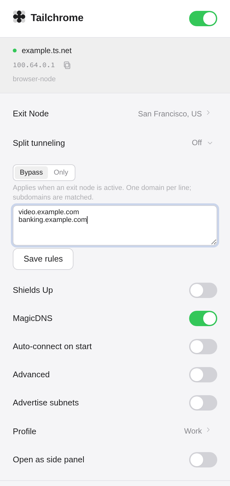

Tailchrome
05 / Split tunneling
Rules that read like intent
Send each domain the right way.
Bypass the exit node for selected sites, or route only the domains you choose.
banking.example.com
video.example.com
intranet.example.com
Direct
Via exit node
